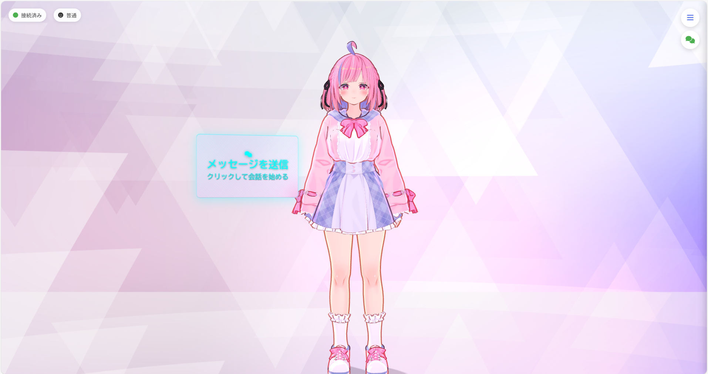
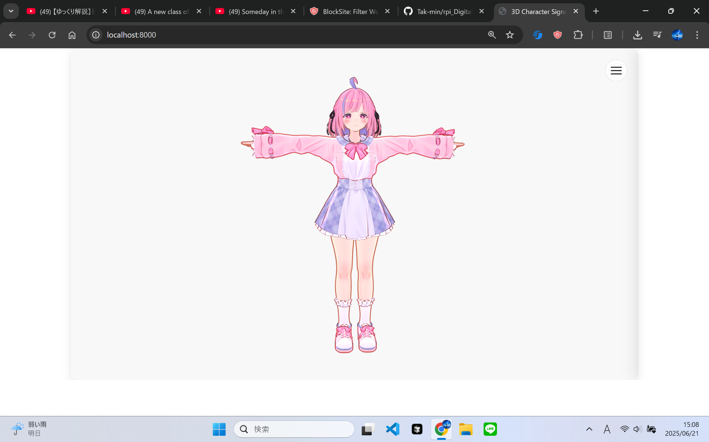
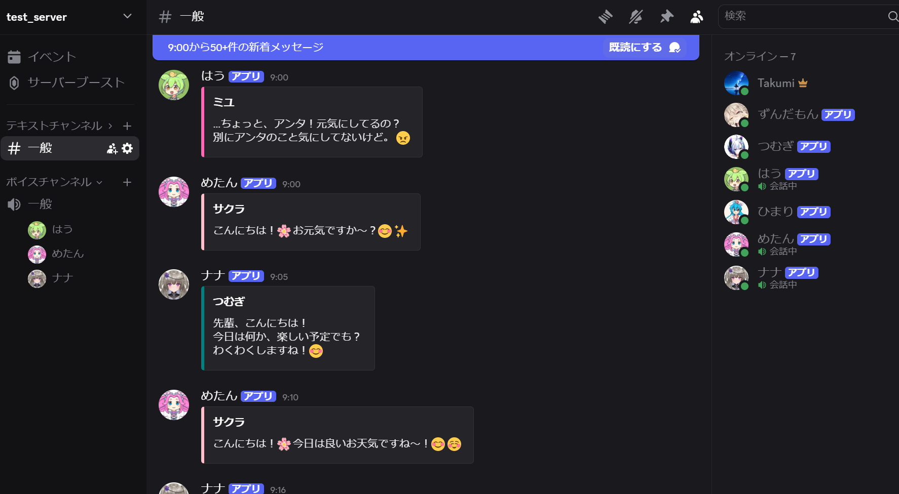
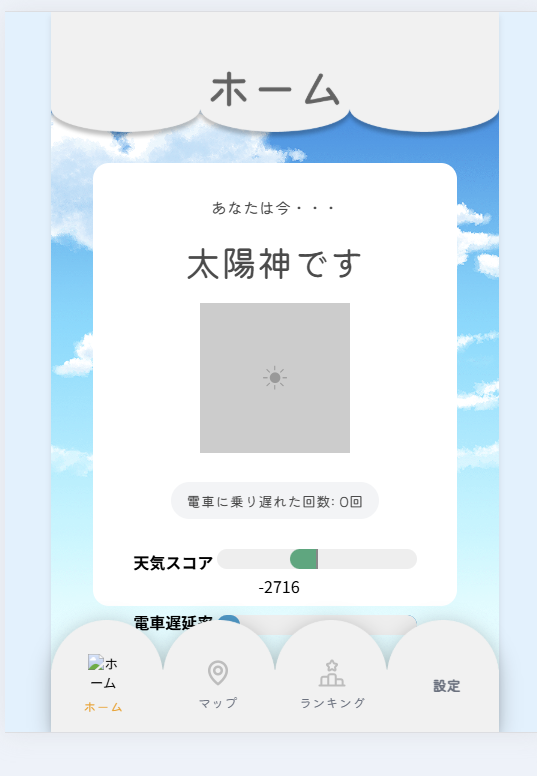
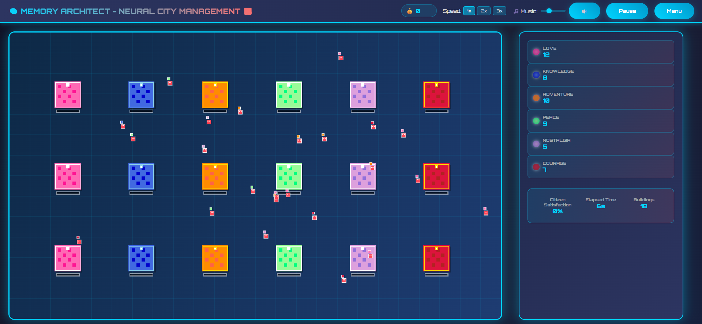
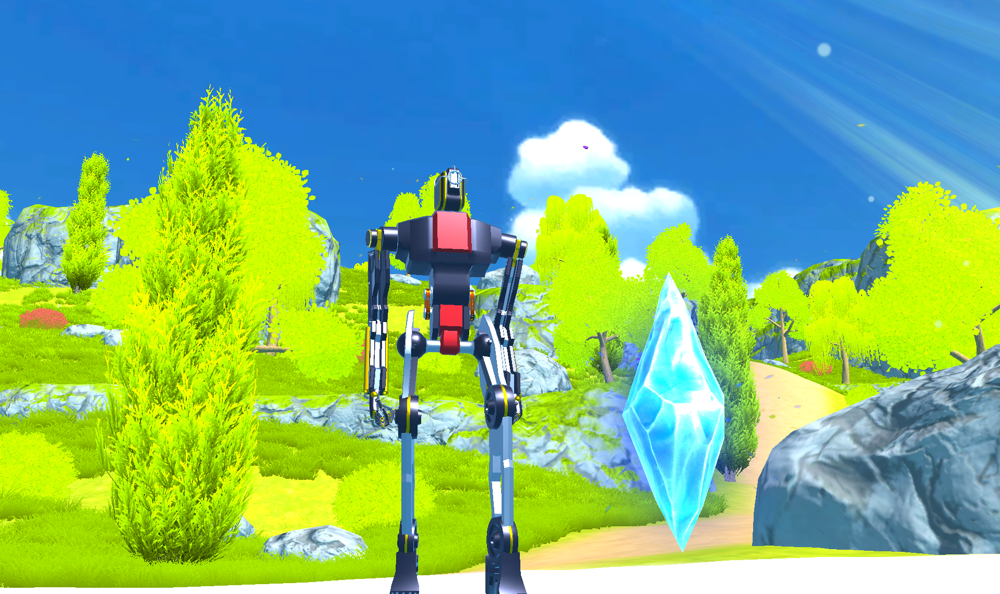

Bio
明石工業高等専門学校の3年生。もともとは情報系の学科を志望していたが、入学試験の点数が届かず、土木系の学科に進んだ。
しかし、諦めきれず独学でプログラミングを始めた。土木の授業を受けながら、夜はReact・Python・Three.jsを叩く——そんな二重生活の中で、自分の「作りたいもの」にたどり着いた。
「解決すべき問題」から逆算し、最速で形にする。ゲームやアニメの中にしか存在しなかった「二次元の相棒」を現実に召喚する——それが今の原動力だ。
Chronology
Origin & Turning Point
兵庫県高砂市出身。ゲーム開発者への憧れからエンジニアを志す。明石高専の情報系学科を希望したが、入学試験の点数が届かず、土木系の学科に進む。しかし諦めきれず、独学でプログラミングを開始。友人の誘いで参加した初のハッカソン（LINE&Yahoo OpenHackU 2024 Fukuoka）にて、技術不足を痛感し本格的な学習を開始した。
土木の授業 × 独学プログラミング
土木系の授業を受けつつ、独学でPython（スクレイピング・データ分析）、HTML/CSS/JSによるWeb開発、ロボット工学研究部でC++とマイコン開発を学習。日中は測量や構造力学、夜はReactとThree.js——そんな二重生活で実装力を鍛えた。
Contests, Products & External Validation
- LINE Open Hack U 2024 Kanazawa: フロントエンド担当。DSのすれ違い通信風Webアプリ開発（Flask, JS）
- 関西ビギナーズハッカソン vol.5: 初のチーフディベロッパー。AIによる未来予測・ベットアプリ開発
- OpenHackU 2025 Kanazawa: チーフディベロッパー兼PM。位置情報・天候連動型占いサービス「そらログ」開発
- MindEmo開発・DCON出場: 感情認識AIを開発し、高専DCON2026で一次審査を通過（40高専79チーム中）
- 全国高専プロコン2025: ゲームを一緒にプレイできるAIエージェント「NextBro」で本戦出場
- 全国高専プロコン2026: 瞑想支援デバイス（ESP32×心拍×呼吸×体温）を開発し出場
- V-Mate本格開発: Three.js・VRM・Gemini・ElevenLabsを統合した3D AIコンパニオンを構築・Web公開
- 未踏ジュニア: 応募・結果待ち
Skills & Arsenal
Web Development
フロントエンドからバックエンド、インフラ構築までの一連の開発。
AI & Software
AI統合、モバイル・デスクトップアプリ開発。
Hardware & Infra
組み込み、インフラ、ゲームエンジン、3D開発。
Works

V-Mate — 3D AI Companion
[Core Project] Three.js・VRM・Gemini・ElevenLabs・AssemblyAI・FastAPI・Socket.IOで構築した3D AIコンパニオン。声を持ち・表情を変え・記憶を積み重ねるキャラクターとリアルタイム会話が可能。Web上で公開済み。

MindEmo — 感情認識AI
FastAPI + Vue 3で構築した感情認識AI。高専DCON2026で事業構想を発表し、一次審査を通過（40高専79チーム中）。人の感情とAIをつなぐという問題意識が、現在のV-Mateの研究的な問いへ続いている。

NextBro — ゲームAIエージェント
AIがゲームの状況を理解し、プレイヤーと会話しながら協力プレイできるシステム。「NG WAR」というゲームモジュールを実装し、AIがゲーム内での会話や戦略をプレイヤーと共有する仕組みを実現。

そらログ (Soralog)
位置情報や天候、遅延情報などのコンテキストに基づいたジンクス・占いWebサービス。PM兼チーフディベロッパーとして開発。

Memory Architect
記憶をベースにしたweb機能だけで実装した都市運営シミュレーションゲーム。

Stardust Ruins
静寂な世界観をベースにした3D探索アドベンチャーゲーム。
Contact
開発の依頼、ハッカソンやコンテストへの誘い、その他のお問い合わせはお気軽にどうぞ。
taku810616@gmail.com